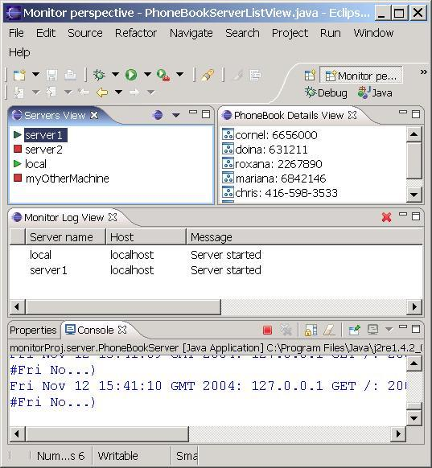
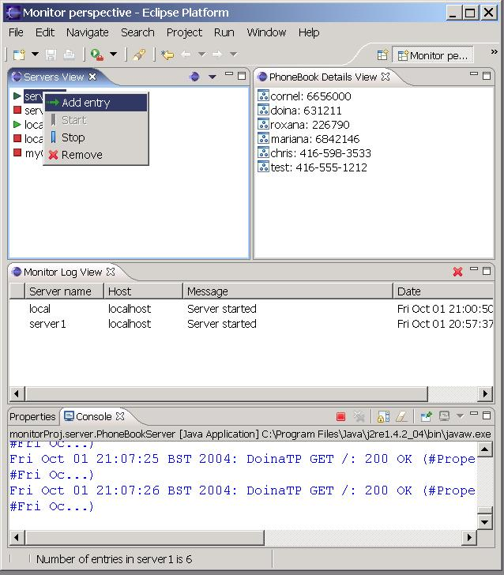
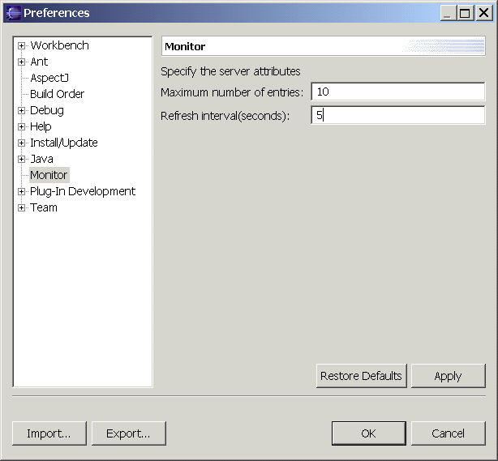
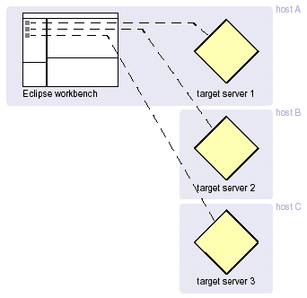
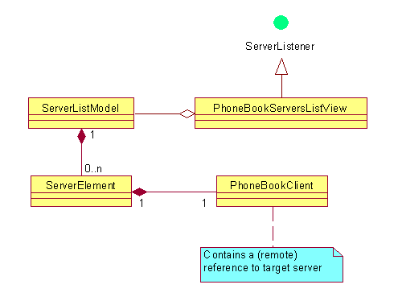
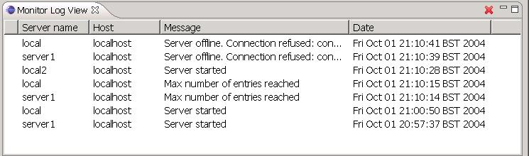

| Eclipse Corner Article |

Summary
Eclipse is most commonly used as a platform for tools that allow the user to construct or assemble an end product out of development resources. It is less usual to use Eclipse as an administrative tool for monitoring existing runtime systems or applications. This article will describe some of the issues that arise in this case and illustrate possible solutions. It will show you can build an Eclipse perspective dedicated to the monitoring task. Running processes are shown in a dedicated view which always reflects their current state. You can start/stop the process, manage connections, invoke operations that the server exposes, examine server output and view events generated by the running applications.By Doina Klinger and Chris Markes, IBM UK (dklinger@uk.ibm.com, cmarkes@uk.ibm.com)
November 12, 2004
Eclipse is mainly a development environment: you create applications and run them. Take the JavaTM Development Toolkit component: applications are stored in Java packages and classes which correspond to directories and files with .java extension respectively. The applications are built using the Java compiler and then executed. Projects are holders for the various files that are stored in the workspace. Depending of the nature of the file, a different type of builder is applied to them.
Administration applications are fundamentally different. In this case, the user interacts with existing applications that typically run outside of the Eclipse JVM, possibly on a remote machine. We will refer to these external applications as servers, since they typically perform some function on behalf of some client. The servers already exist, though they can be made to run from Eclipse or even developed from the same workspace. Often servers are administered by a browser-based application. In this article, we will show you how it can be done using Eclipse.
We will show how you can use Eclipse to manage external servers. Our server is a simple phone directory that holds data about people and their phone numbers. The server exposes operations to add new entries, query the list of entries and find out how many you have.
To see the sample in action you'll need to download it and install it as a plug-in on Eclipse 3.0 and then start the workbench and open the Monitor perspective. In figure 1 you can see the sample when a few servers have been defined and data entries have been added.

Figure 1. Monitor sample in action
In the servers view, the icons indicate the state of the servers: a red square shows the server being unavailable, a green triangle shows an active server. The state is kept up to date by polling every ten seconds. To create a new server entry, start the New Connection wizard from the pulldown menu of the local toolbar of the Servers view (highlighted in figure 1):
Specify a name, a host, a port number and whether you can start and stop the server from the workbench. Start the server by selecting the Start option from the context menu (Figure 3). Add a few new entries. You can see the server output in the console view. When you select a server, the number of entries is shown in the status line and the content in the detail view in the right hand side.

Figure 3. Invoking operations on the server
The sample shows how you can monitor the state of a running system and report back in the Monitor Log view events related to the state of the server. Add entries until the maximum number of entries is reached and you can see the event reported in the log . You can modify the server preferences for the refresh interval and maximum number of entries.

Figure 4. Server preferences
From the point of view of an administrative application, the world is composed of the target systems being administered together with the environment of the application itself. The figure below shows the target servers running either on a different host or on the same machine with the Eclipse workbench, though in a different JVM.

Figure 5. Workbench and target servers
The application requires an internal representation or model of the target systems, which is used to hold information about their state and attributes. In our example, we model individual target systems using instances of ServerElement. The ServerElement class encapsulates instance variables (exposed by accessor methods) relating to the target server's location and a snapshot of its most recently observed condition:
public class ServerElement implements IAdaptable, IWorkbenchAdapter {// Target server location String name; String hostname; int port; boolean local;
// Target server state boolean alive; boolean full;
PhoneBookClient connection
ServerLauncher launcher; ... }
The location information (
The alive and full attributes (
The ServerElement class encapsulates a PhoneBookClient instance (
An optional ServerLauncher field(
Since our sample application allows the administrator to interact with more than one target server, we use the ServersModel class to bring together multiple instances of ServerElement as a list. The interaction of these classes is described in the following diagram:

Figure 6. Server model
We next look into how to serialize such a model.
When we're using the Eclipse workbench to develop applications, the resources we work with are generally local. The source files we create reside in the workspace -- even if we use a repository to share them with other developers -- and the built output of a project likewise remains local.
By contrast, when our task is to monitor and administer remote systems, the content we need to display in the views we use must be retrieved across the network. (We'll deal with issues of 'liveness' later on in the article.)
In our example, the ServerElement is the class that represents the remote system and is persisted locally. In our example, we provide a view, PhoneBookServersListView, which is really a Navigator for servers.
At this point, we have to decide where to store the connection information representing remote systems. We can store them:
| Using workspace resources | Using private resource information (plug-in metadata) |
| Resources (representations of remote systems) are visible in the Navigator, and are available to other Eclipse tools | Resources are visible only via dedicated plug-in code (specialized views etc.) |
| Representations of remote systems created with New wizard (contribution to org.eclipse.ui.NewWizards) | Representations of remote systems created by a user action provided by plug-in code |
| 'Content' of remote systems is accessed using an Editor | Content is accessed using specialized views |
| Multiple editor instances can be used to work with multiple remote systems simultaneously | View must specifically accommodate working with multiple remote systems if this is desired |
| Content can appear without customizing any perspective | Existing perspective must be customized by user (e.g. Window -> Show View) or a specialized perspective provided |
The .metadata directory of a workspace is considered to be a "black box" where important information about the workspace structure, such as a project's references or a resource's properties, are typically stored. The non-workspace resources are stored on a per plug-in basis, typically all in one file.
In our example, the "resources" that we want to persist are ServerElement objects, or, more precisely, those attributes needed to establish a session with the remote process and interact with it -- name, host, port and the isLocal attribute. The other attributes of the ServerElement which describe the state of the server at one moment are transient and are not saved.
In /workspace/.metadata/.plugins/MonitorProject/connection.xml we save information about connections in an XML format:
<Monitor> <Server Host="134.456.888.99" IsLocal= "true" Name="MyConnection" Port="600" /> <Server Host="334.553.636.44" IsLocal="true" Name="OtherConnection" Port="600" /> <Server Host="223.223.662.55" IsLocal="false" Name="DomainConnection" Port="400" /> </Monitor>
The serialization of our server model is achieved in the following steps:
File connectionFile = MonitorProjectPlugin.getDefault().getStateLocation().append("connection.xml").toFile();if (!connectionFile.exists()) connectionFile.createNewFile();
<Monitor> tag. From the parent IMemento object, we extract the children entries for each Server. (
FileReader reader = new FileReader(connectionFile);
We create an XMLMemento corresponding to our <Monitor> root (


Iterator iterator = model.getContent().iterator()IMemento child = memento.createChild("Server"); child.putString("Name", conn.getName()); // the same for all attributes }
Writer writer = new FileWriter(connectionFile); memento.save(writer);
A key ingredient in monitoring running systems or processes is knowing whether or not they're in a normal, healthy state. In the most basic situations, it can be enough just to know whether a server is running or stopped, but typically there are a number of other potential conditions -- which depend upon the type of system being monitored -- that an administrator is interested in. Rather than having to go and pro-actively query the state of the server, it's useful to have a continuous indication of its health, much like the dashboard in your car. You can tell at a glance if all's well, and only peek under the hood if something lights up that tells you there's a problem. (Well, that's the theory!)
The server view is our dashboard display showing at a quick glance the state of the running applications. How this is put together is captured in the class diagram from Figure 7. The view uses the model for its label and content provider. The server model uses a background thread to continually poll the target servers for which it contains references. When a change occurs in the state represented by the model, it generates a ServerEvent to notify listeners of the change. The ServerListView registers itself as a ServerListener in order to receive these notifications.
The server view needs to be up-to-date; a dashboard that shows your petrol tank full when you are down to the last drops is of not much use. Hence the view needs to be a server listener to react to the changes. The ServerListener interface defines the following methods:
void serverStarted(ServerEvent event) void serverStopped(ServerEvent event) void serverUpdate(ServerEvent event) void serverError(ServerEvent event)

Figure 7. Class diagram
The way the connection object works depends upon the nature of the server. Our example uses an HTTP server which expects connections to be short-lived (i.e. it is connectionless), and that means we need to perform a 'normal' interaction with the server in order to determine if it's still there. We won't illustrate the HTTP protocol handling here -- that's implemented in the PhoneBookClient class.
The ServerListModel keeps up-to-date with the state of the target
servers it knows about by having a monitor thread class running in the
background and examining each server element in turn. The interaction
for one ServerElement is shown in the code snippet from below. For the
server element, we obtain its PhoneBookClient in order to invoke its
method that tells us how many entries the server contains(


The response from the server is used to generate events for registered listeners (i.e. the servers view), using the notifyStarted and notifyUpdate methods.
ServerElement element = ..;
try {
PhoneBookClient client = element.getPhoneBookClient();
int count = client.getEntryCount ();
if (element.isAlive () == false) {
element.setAlive (true);
notifyStarted (new ServerEvent ("Server started", IStatus.INFO, element.getName()));
}
if (element.isFull () == false && count >= maxEntries) {
element.setFull (true);
notifyUpdate (new ServerEvent ("Max number of entries reached", IStatus.WARNING, element.getName ()));
} else element.setFull(false);
} catch (IOException e) {
if (element.isAlive () == true) {
element.setAlive (false);
notifyStarted (new ServerEvent ("Server stopped (" + e.toString () + ')', IStatus.INFO, element.getName ()));
}For servers that are connection-oriented (expect clients to remain connected indefinitely), it may be sufficient simply to assume that as long as the connection hasn't been broken, the server is still available. For cases where we want to use more detailed criteria to determine the health of a server, our connection object will need to interact with the remote system and perform the necessary operations to determine that state.
In addition to checking
whether a server is still running or not, the administrator might want
to get more details about the well being of a running application. One
way of doing this is by examining the Monitor Log view.
This view
records notifications from the server sent in the shape of a
ServerEvent. The view is consistent with the ErrorLog of the PDE
plug-in and it wraps a TableViewer. The entries are of our own type
ServerLogEntry, which wraps various details about the event, such as
the severity, detailed message, code, server name.
In our example, the type of
events that are recorded are server started and stopped, and an alarm
event. For illustration purposes, we have defined a (configurable)
limit of ten entries
as maximum to be held by a server and we can see the event being
reported when this number is reached.

Figure 8. Monitor log view
The events are generated by the background thread of the server model that monitors the remote servers. If one of the servers is killed externally you can see the server's state being updated to stop and a stopped event being generated.
Thinking back to the dashboard, if a warning red light shows an unusual condition, there's usually further investigation required. The experienced mechanic wants to open the hood to see the internal workings of the running system. In our example, when the server and the log views provide an indication of a problem, the administrator might want to dig deeper to check the state of the server.
In our example we have the ServerContentView in the right hand of the perspective. This shows the details of our PhoneBookServer, namely the names and phone numbers corresponding to the server selected in the Servers view. If the server is stopped, there is no detailed content.
When developing applications destined to run in a server environment, it’s useful to have an instance of the target server under the control of the development environment. This allows the development environment – i.e. the workbench – to be the single point of control for running the application under development. (If the server itself is the application being developed, the picture changes a little.) A sample use is a test environment, though this function is not limited to it.
If the server is a separate, existing application, we need a way of launching it from the workbench while making its output visible to the developer. In order to do this we use the framework described in Launching Java Application programmatically.
An instance of a server launcher is associated with each server instance that’s defined as local. (The local property exists in order for us to determine whether or not we can launch the defined server as a local process.). The launcher is set on the start method oof the ServerElement and nulled up on the stop and is used to determine the started/stopped status. The steps necessary to launch our phone server are detailed below:
public ILaunch launch (String mainClassname, String args) throws IOException, CoreException {The
setClasspathmethod creates the list of classpath entries by adding the JVM and all the required plug-ins and libraries. For more details, see the code.
Admittedly it is a bad idea to create your own perspective in Eclipse, you should aim to reuse the existing ones. We made an exception for this article, because no existing perspective seem to quite fit with the task of administering objects and for illustration purpose.
We use the org.eclipse.ui.perspectives extension point,
giving it the class attribute which must implement the org.eclipse.ui.IPerspectiveFactory
interface. The createLayout method arranges the views that
are relevant to our monitoring application. The layout is defined
around the editor area(top-right part). We don't actually have anything
to edit so make the editor area not visible. To the left of it, there
is the servers view. Replacing the editor area is a view that shows
the content of the selected server. At the bottom of the page, we show
the monitor view and below the property view
and the console view.
We use org.eclipse.ui.preferencePages extension point
with ServerPreferencePage as its class attribute
to define two of the configuration attributes of the server. One of
them is specific to our server, the maximum number of entries that the
phone directory accepts. After this number is reached, alarms are sent
to the log view if more entries are added.
The second parameter is more generic and could be used for other servers. It describes the refresh interval that the sample uses are to maintain the status of the connections up to date. The line from below is used to extract the preferred value of a parameter from the preference store associated with our plug-in.
ServersPlugin.getDefault().getPreferenceStore().getInt("MAXIMUM_ENTRIES")
The server we've supplied in our example is a simple HTTP server representing a phone book. The server holds a set of phone number entries in a Properties object, and supports a handful of HTTP requests to query and update the content. The requests supported are
/lookup?name=name: returns the phone number entry for the given name/remove?name=name: removes the phone number entry for the given name/update?name=name&value=value: creates or updates the phone number entry for the given name/count: returns the number of phone number entries stored in the server/info: returns a version string/: returns the server's set of entriesMuch of the server's code is there simply to implement just enough of the HTTP 1.1 protocol to support the necessary operations. We use a PhoneBookClient object to construct the necessary queries and handle the responses. A java.net.URLConnection provides the client-side implementation of the HTTP protocol, and the PhoneBookClient simply creates URLConnection instances with the appropriate request URI for each operation.
Java and all Java-based trademarks and logos are trademarks or
registered trademarks of Sun Microsystems, Inc. in the United States,
other countries, or both.
Other company, product or service names may be trademarks or service marks of others